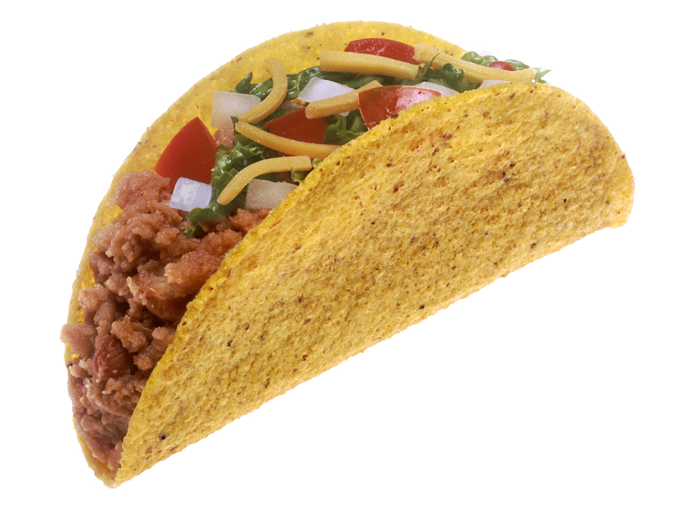

Tacos Recipe

Description
Here we will teach you how to make a delicious taco!
Ingredients
- Shredded cheese
- Ground Turkey or Beef
- Onion Powder
- Garlic Powder
- Salt
- Black Pepper
- Paparika
- Taco Shells
- Sour Cream
- Taco Seasoning
- Lettuce
- Salsa
Steps
-
Add ground turkey or beef to a pan on the stove with seasonings and mix the
seasonings in
- Add meat to taco shell
- Layer shredded cheese ontop
- Layer sour cream on top
Home page